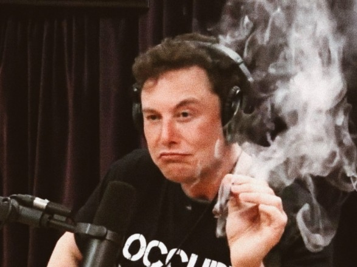

Elon Reeve Musk

Ілон Рів Маск (англ. Elon Reeve Musk; нар. 28 червня 1971, Преторія, ПАР) — інженер, підприємець, винахідник, інвестор, мільярдер.
Засновник компаній SpaceX, PayPal,[13] Neuralink і The Boring Company, головний дизайнер (Chief Product Architect), генеральний директор і голова ради директорів Tesla Inc., що керує заводом Tesla.
- personal life
- companys
- interesting facts
In 2020 the richest man in the world
Personal life
Перша дружина, Джастін, вчилася з ним в тому самому університеті в Канаді. Вони одружилися у 2000 році, і в сім'ї з'явилося п'ятеро синів. У вересні 2008 Ілон і Джастін оголосили про сварку (розлучення?), а незабаром стало відомо, що Маск зустрічається з британською акторкою Талулою Райлі.
У 2010 році Ілон одружився з Талулою Райлі, церемонія одруження відбулася 25 вересня в кафедральному соборі міста Дорнокс[en] у Шотландії. У січні 2012 пара подала на розлучення. У липні 2013 року стосунки поновили, але 31 грудня 2014 року Маск знову подав на розлучення, виплативши дружині в цьо́му ви́падкові близько $16 млн, на відміну від першого разу — $4,2 млн.
У травні 2015 року опублікували біографію Ілона, яку написав американський бізнесовий колумніст Ешлі Венс. Українською книжка з'явилася вже наприкінці грудня того ж року. Переклад з англійської здійснила Мирослава Лузіна для видавництва ТАО.
Ще в 2013 році Маск познайомився з Ембер Герд на зйомках фільму «Мачете вбиває». У 2015 вона вийшла заміж за Джонні Деппа, і вже в 2016 розлучилася. Того ж року Маск почав з нею зустрічатися, за рік пара розлучилась.[36][37]
7 травня 2018 року Маск та канадська співачка Ґраймз повідомили, що вони зустрічаються.[38] 4 травня 2020 року у пари народився син,[39][40] якого, за повідомленням Маска 5 травня, назвали «X Æ A-12».[41][42] Наступного дня Ґраймз пояснила, що це ім'я означає.[43] Мати Ілона Маска розповіла, що називає онука просто Еш.[44]
13 листопада 2020 року заявив, що зробив 4 швидкі тести на коронавірус (антиген коронавірусу SARS-СоV-2). Із них два виявилися позитивними, а два — негативними. Також він заявив, що має симптоми заступи.[45] Він планує зробити також тести ПЛР в різних лабораторіях.
Mask company
interesting facts
Найбільший автоконцерн «DAIMLER AG» володіє часткою TESLA, угоду про стратегічне партнерство підписали 19 травня 2009 року. Концерн Daimler AG придбав 10 % акцій Tesla за $50 мільйонів. Нині $50 мільйонів виросли до майже $3 млрд
На конференції TED Ларрі Пейдж заявив, що у разі його смерті його гроші перейдуть засновникові Tesla Motors, SpaceX, Solar City, Neuralink, The Boring Company і охочому поселити людей на Марсі Ілону Маску.
Своє бажання Ларі Пейдж пояснив тим, що він хоче бачити таких людей, як Ілон Маск, — здатних змінити світ. Відповідно, він вірить в те, що робить CEO Tesla Motors, і впевнений в правильності та корисності його починань
Ілон Маск з'явився в серіалі Юність Шелдона в 6 серії 1 сезону. В кінці серії показаний Ілон, який переглядає старі записи Шелдона про повернення ракет на Землю, потім кладе їх у шухляду стола (дата показу оригінальної серії — 30 листопада 2017)